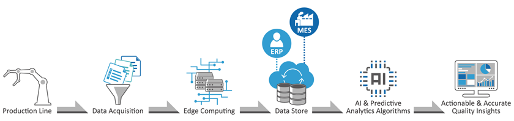
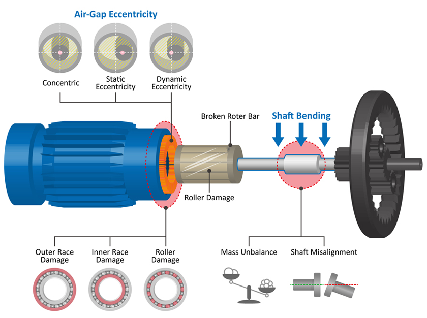
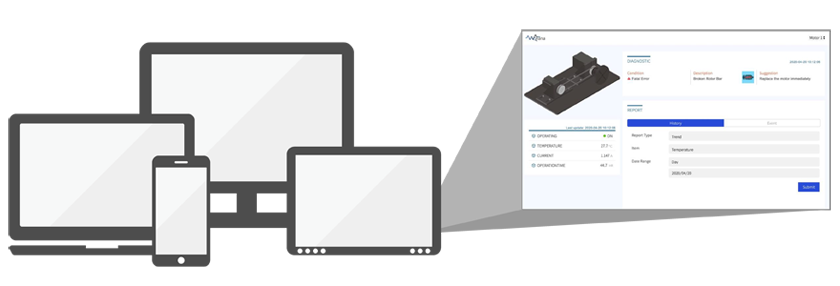

Keep your motors operating
at peak efficiency
EtherWAN and AMASTek wānana Motor Predictive Diagnostic Maintenance (MPDM) uses the internet of things (IoT) and machine learning to provide predictive maintenance on electric motors. The solution collects motor sensor data including current and temperature and converts it into useful information to predict the health condition of machines, identifying both mechanical and electrical issues.
Using the solution, operations managers can reduce equipment maintenance costs, keep motorized equipment up and running, and optimize the lifetime value of critical day-to-day machinery.
Motor Current Signature Analysis (MCSA) + Machine Learning & AI
Motor Current Signature Analysis this is an innovative method that allows a thorough analysis of the condition of the electric motor. The advantage of this method is that testing is carried out during the normal operation of the motor and there is no need to stop and interrupt the production process.
wānana PdM solution analyses & processes input data records leveraging Machine Learning (ML) techniques. This helps in detecting any anomalous equipment behavior and thereby predicting the possible failure based on data insights.
How does IoT based wānana predictive maintenance work
For diagnostic and predictive maintenance to be carried out on an asset, the following components are the basic requirement:
Sensor/Meter
for gaining data and install in the target device or machine.
Multi-Tenant IoT Platform
Visualization- Managing level management, Conditions Monitoring dashboard, real-time alert, data analysis.
Data acquisition equipment
The process begins with sensors (strain gauges, vibration, etc.). Electrical signals from the sensors are fed into data acquisition equipment, which digitize these analog signals into their computer-compatible equivalent.
Edge computing gateway
In wānana PdM solution, the intelligence edge computing leveraging by EtherWAN AiR PACE IoT Smart edge computing gateway seamlessly extends cloud services (AI/ML) to edge devices so they can act locally on the data they generate, while still using the cloud for management, analytics, and durable storage.
Download AiR PACE datasheet
To enable preventive maintenance for machines, a series of processes and analyses must be carried out that convert collected sensor data to useful information that predicts the health condition of machines and crucial elements. The process is as follows:
wānana PdM solution enables to detect these defects
- Provides full records and remote monitoring with persistent data collection and storage
- Aids in the timely replacement of failing parts and continuous operations using a current detector for motors in addition to temperature sensors for abnormal temperature monitoring, unbalanced detection and any rotor, stator, rotary shaft damage detection
- Real-time remote asset visibility and control enabled
- Notifies personnel of minor to severe system anomalies with automated alerts to gain faster maintenance
- Intelligence in the cloud and at the edge
- Integrated Microsoft Azure IoT service and SaaS
AMASTek Multi-Tenant IoT Platform for wānana
Power by Azure IoT Cloud Service
AMASTek Multi-Tenant IoT Platform is an application enablement platform that allows enterprises to effectively build applications that securely scale to lots of project & devices. With real-time stream processing and batch processing capabilities, users can create dynamic experiences and perform complex analytics.
- Top management and be able to monitor every "Tenant".
- Top administrator.
- Enable to manage configurations of Service Package.
- 2nd highest management unit and enables to monitor its owned plants.
- User authority management.
- Each Device corresponds to a Service Package.
- Includes three main services: data streaming, database, and front-end user interface.
- Historical data query.
- Support connecting one Azure IoT Service Package.
- Default edge devices is EtherWAN AiR PACE IoT Edge Computing Gateway.
AMASTek Multi-Tenant IoT platform provides equipment operators and maintenance engineers with comprehensive insight into asset risk enabling them to maintain higher levels of asset availability.
Intelligent Inspection
Identify high-risk assets before they fail, prioritize maintenance expenditures, and operationalize identified maintenance needs.
Visualize risks across assets portfolios
View details of assets risk across critical business and operating dimensions.
Data integration and correlation
Seamless integration with virtually all internal and external systems.
Advanced analytics
- Anomaly detection
- Machine learning
- Predictive analytics
- Reinforcement learning
Coordinate with alerts and notification functionality
Facilitate effective coordination through configurable alerts and thresholds. Summarize and present alerts within the application and configure for delivery to designated contacts via SMS , email or LINE notification.
EtherWAN – Comprehensive IoT product line that incorporates broad scalability, robust reliability, and heavy data management into efficient networking devices.
www.etherwan.com
AMASTek – An expert in providing a comprehensive solution from the edge device to cloud infrastructure, bring more long-term benefits and value.
www.amastek.com.tw